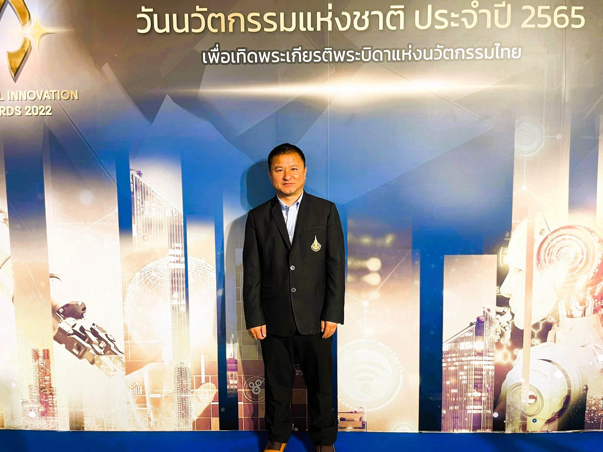

Electrochemical
Sensors
Design and development of sensitive, selective and portable sensing platforms for environmental, biomedical, food and forensic applications.
Explore →ANALYTICAL CHEMISTRY · RESEARCH · ACADEMIA
Assistant Professor, Analytical Chemist and electrochemical sensor researcher working at the intersection of functional nanomaterials, portable chemical sensing, environmental monitoring and biomedical analysis.
Department of Natural Sciences · Sherubtse College · Royal University of Bhutan

Functionalized carbon nanomaterials · sustainable porous carbons · smartphone-integrated sensing · environmental & biomedical applications
01 · RESEARCH
My research develops practical and portable electrochemical sensing platforms using functionalized carbon nanomaterials, sustainable materials and advanced electrode architectures for chemical analysis.
Design and development of sensitive, selective and portable sensing platforms for environmental, biomedical, food and forensic applications.
Explore →rGO, CNTs, heteroatom-doped carbons, laser-reduced graphene oxide, activated porous carbon and hybrid nanocomposites.
Explore →Electrochemical and analytical approaches for water-quality monitoring and detection of environmentally relevant contaminants.
Explore →Sensor platforms for biologically relevant molecules, pharmaceuticals and portable analytical applications.
Explore →02 · PROJECTS & CONSULTANCY
Research projects, consultancy activities and collaborative environmental assessments spanning water quality, environmental monitoring, analytical chemistry and electrochemical sensing.
CONSULTANCY · DGPC · 2026
Principal Investigator for water-source sampling and water-quality testing for Dorjilung Hydropower Project Limited (DHPL), with research support funded by the Druk Green Power Corporation (DGPC).
CONSULTANCY · BPC · 2025
Principal Investigator for environmental baseline services and environmental assessment associated with the 400 kV D/C East–West Transmission Line Project, Bhutan.
CONSULTANCY · BPC · 2025
Principal Investigator for environmental assessment and baseline environmental services for the Gamri I and Gamri II transmission line projects in Trashigang Dzongkhag.
RESEARCH GRANT · STLRG · 2025–2026
Co-Principal Investigator for a research project developing real-time drinking-water monitoring using IoT sensors supported by laboratory validation at Sherubtse College.
HYDROPOWER · DGPC · 2021
Core member of the research and technical assessment of water quality and aquatic ecology for the Yungichhu Hydropower Project.
HYDROPOWER · DGPC · 2021
Core member of the research and technical assessment of water quality and aquatic ecology for the Thungdiri Hydropower Project.
INTERNATIONAL COLLABORATION · UKRI-GCRF · 2020–2021
Core member of the South Asian Nitrogen Hub research project examining the effects of nitrogen air pollution on forest ecosystem services.
RESEARCH · WORLD BANK · 2019–2020
Core member of a research project applying geochemical tracers to investigate streamflow characteristics in the Paa Chu Basin.
03 · PUBLICATIONS
A searchable database of peer-reviewed research publications covering electrochemical sensing, functional nanomaterials, environmental monitoring, biomedical analysis, forensic electrochemistry, food analysis and related areas of analytical chemistry.
Peer-reviewed research articles
Research published across five years
Electrochemical sensing & nanomaterials
Environmental, biomedical, forensic & food analysis
Research contributions spanning electrochemical sensors, functionalized carbon nanomaterials, environmental analysis, biomedical sensing, forensic electrochemistry, food analysis and sustainable analytical technologies.
04 · SUPERVISION & MENTORSHIP
Supporting students through research supervision, laboratory-based learning and academic mentorship, with emphasis on analytical chemistry, environmental assessment, electrochemical sensing and research methodology.
Supervision and guidance of undergraduate research projects in analytical, environmental and electrochemical chemistry, including research design, experimental planning, laboratory investigation and interpretation of results.
Mentorship in laboratory techniques, analytical instrumentation, electrochemical methods, scientific data analysis and research methodology to help students develop practical research competencies.
Guidance in scientific writing, data interpretation, research presentations, technical reporting and communication of research findings in a clear and scientifically rigorous manner.
Engaging students in laboratory investigations, environmental assessment activities and applied chemistry projects that connect academic knowledge with real-world analytical challenges.
05 · GRANTS & RESEARCH SUPPORT
Research grants, institutional support and externally funded consultancy activities supporting analytical chemistry, environmental monitoring, electrochemical sensing and applied scientific research.
Combined consultancy value for the 400 kV and 132 kV transmission-line environmental assessments.
Water-source sampling and water-quality testing for the Dorjilung Hydropower Project.
Real-time drinking-water quality monitoring using IoT sensors and laboratory validation.
Research on the detection of adulterants in common food items in the Bhutanese market.
NSRF · PRINCE OF SONGKLA UNIVERSITY
Financial support from the National Science, Research and Innovation Fund and Prince of Songkla University supported doctoral research on the development of electrochemical sensors for environmentally and biologically relevant analytes.
ACRG · 2020–2021
Co-Principal Investigator of a research project supported by the Annual College Research Grant at Sherubtse College, investigating analytical approaches for detecting adulterants in commonly consumed food products.
STLRG · 2025–2026
Co-Principal Investigator in a research project developing real-time drinking-water quality monitoring using IoT-enabled sensors supported by laboratory validation at Sherubtse College.
DGPC · DHPL · 2026
Principal Investigator for water-source sampling and water-quality testing associated with the Dorjilung Hydropower Project, supported through Druk Green Power Corporation.
BPC · ENVIRONMENTAL CONSULTANCY · 2025
Principal Investigator for environmental baseline services and water-quality assessment associated with Bhutan Power Corporation transmission-line projects, including the 400 kV East–West and 132 kV Gamri I & II transmission lines.
06 · AWARDS & RECOGNITION
Academic awards, professional recognition and doctoral scholarship support reflecting research achievement, academic service and continued professional development.
OUTSTANDING THESIS AWARD · 2025
Recipient of the Outstanding Thesis Award 2025 from Prince of Songkla University, Thailand, in recognition of doctoral research on the development of electrochemical sensing platforms based on functionalized carbon nanomaterials for environmental monitoring and biomedical analysis. The award was presented on 19 June 2026.
ROYAL CIVIL SERVICE AWARD · 2018
Received the Royal Civil Service Award in the form of a Bronze Medal in recognition of completing ten years of teaching service in Bhutan.
PHD SCHOLARSHIP · 2021–2024
Received doctoral scholarship support through the Center of Excellence for Trace Analysis and Biosensor at Prince of Songkla University to pursue doctoral research in analytical chemistry and electrochemical sensing.
SCHOLARSHIP & FINANCIAL SUPPORT · 2021–2024
Received graduate studies financial support from Prince of Songkla University and scholarship support from the Royal University of Bhutan for doctoral study and research in Thailand.
07 · ACADEMIC CONTRIBUTIONS
Academic work extending beyond the classroom through chemistry education, curriculum development, programme leadership, laboratory development, student mentorship and academic service.
Teaching physical, environmental, inorganic and research-methods chemistry through interactive, inquiry-based, laboratory-based and technology-enhanced approaches.
Programme leadership for the BSc in Chemistry, including curriculum development, programme review, staffing, resource planning, quality assurance and implementation of the four-year degree programme.
Contribution to curriculum review and modernization with emphasis on contemporary analytical chemistry, practical laboratory skills, digital learning, scientific communication and research-oriented learning outcomes.
Development and planning of analytical, environmental and electrochemical laboratory capabilities, including instrumentation, research facilities, computational resources and laboratory-based student learning.
Guiding students in research design, experimental planning, laboratory investigation, data analysis, scientific writing, presentations and interpretation of research findings.
Contribution to programme review, quality processes, academic committees, recruitment, module development, textbook review, journal peer review and other institutional academic activities.
Integration of Moodle, digital learning resources, online quizzes, blended learning and technology-supported activities to strengthen student engagement and independent learning.
Connecting classroom chemistry with real-world applications through environmental assessments, laboratory investigations, research projects and field-based analytical activities.
08 · ABOUT
I am an Assistant Professor in the Department of Natural Sciences at Sherubtse College, Royal University of Bhutan. My academic work brings together analytical chemistry, electrochemical sensing, functional nanomaterials and applied chemical analysis.
I completed my PhD in Analytical Chemistry at Prince of Songkla University, Thailand. My doctoral research focused on the development of electrochemical sensing platforms based on functionalized carbon nanomaterials for environmental monitoring and biomedical analysis.
My research interests include portable electrochemical sensors, functionalized carbon nanomaterials, sustainable porous carbon materials, smartphone-integrated analytical systems, and their applications in environmental, biomedical, food and forensic analysis.
Alongside my research, I contribute to chemistry education, curriculum development, programme leadership, laboratory development, research consultancy, student supervision and academic service at Sherubtse College.
Download CV →09 · ACADEMIC & RESEARCH PROFILES
Explore my scholarly publications, researcher identifiers, citation profiles and professional network through the academic and professional platforms below.
Publications, citations and scholarly research impact across indexed academic literature.
View Profile → 02 RESEARCHER IDENTIFIERPersistent researcher identifier connecting publications, research activities and scholarly contributions.
View ORCID → 03 RESEARCH NETWORKResearch publications, projects, scholarly collaboration and academic networking.
View Profile → 04 CITATION DATABASEAuthor profile, indexed publications and citation information within the Scopus database.
View Scopus → 05 RESEARCH DATABASEResearcher profile and scholarly publication record within the Web of Science ecosystem.
View Profile → 06 PROFESSIONAL NETWORKProfessional background, academic activities, collaborations and professional networking.
View LinkedIn →Academic and professional profiles are maintained on their respective external platforms. Profile information, publication records and citation metrics may be updated independently by each platform.
10 · CONNECT
For research collaboration, academic enquiries, student projects, professional engagement, consultancy opportunities or scientific collaboration, please feel free to get in touch.
Email Dr. Sangay Wangchuk →swangchuk.sherubtse@rub.edu.bt